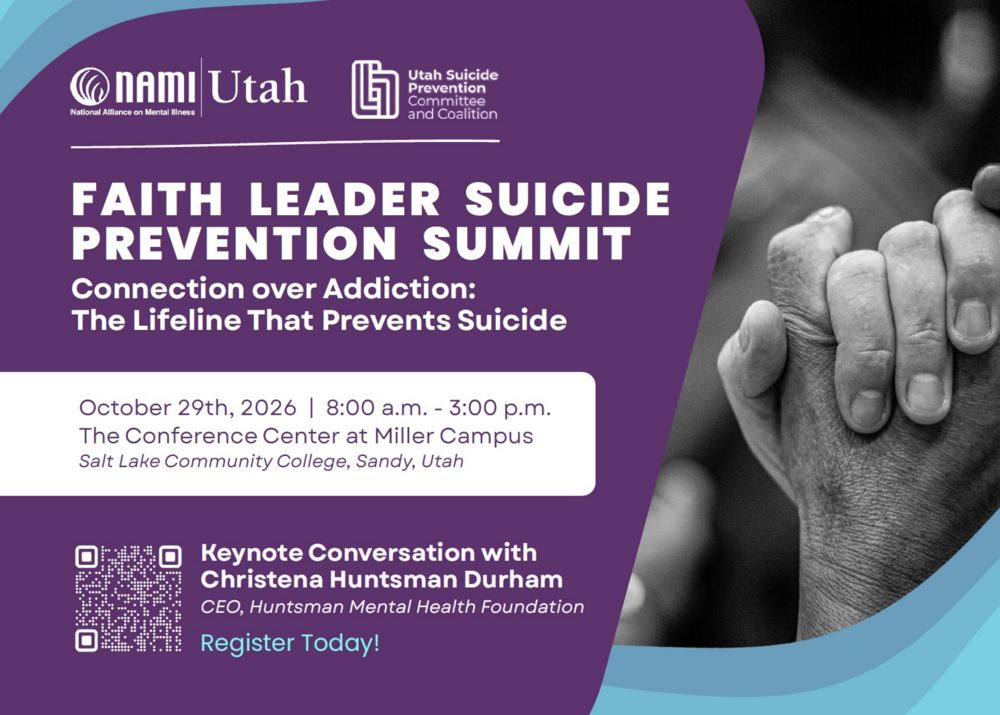
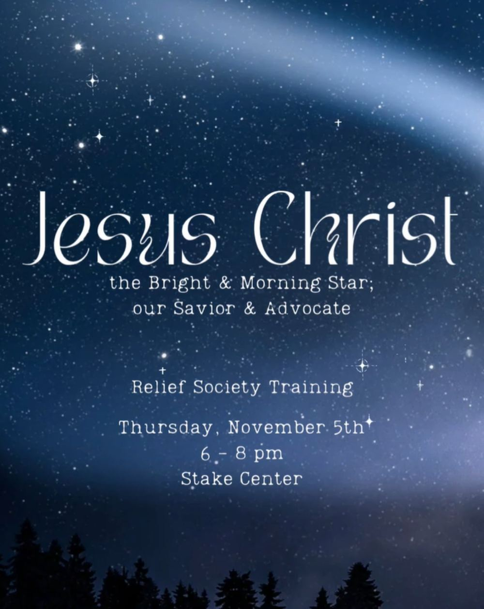
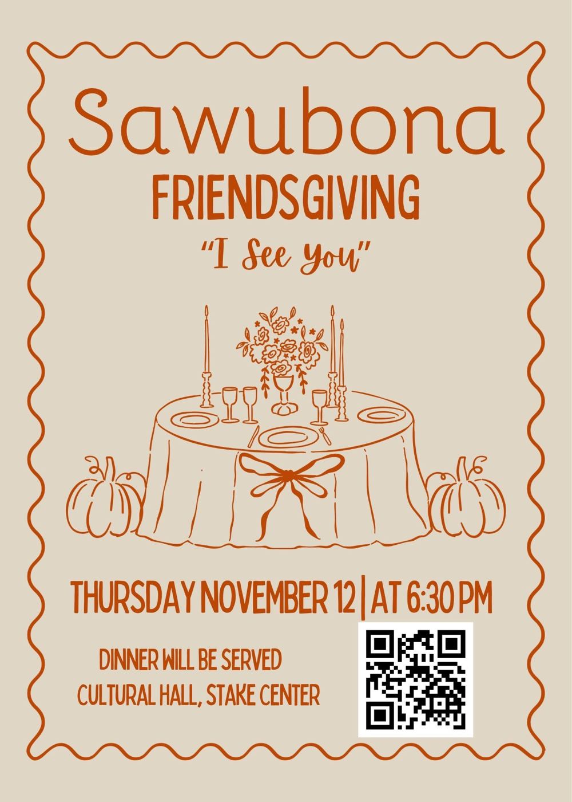
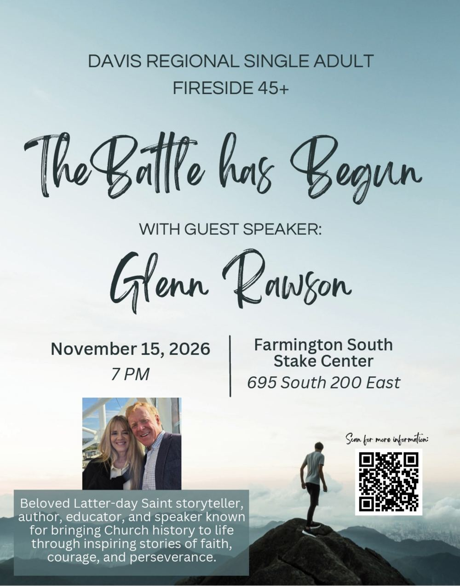
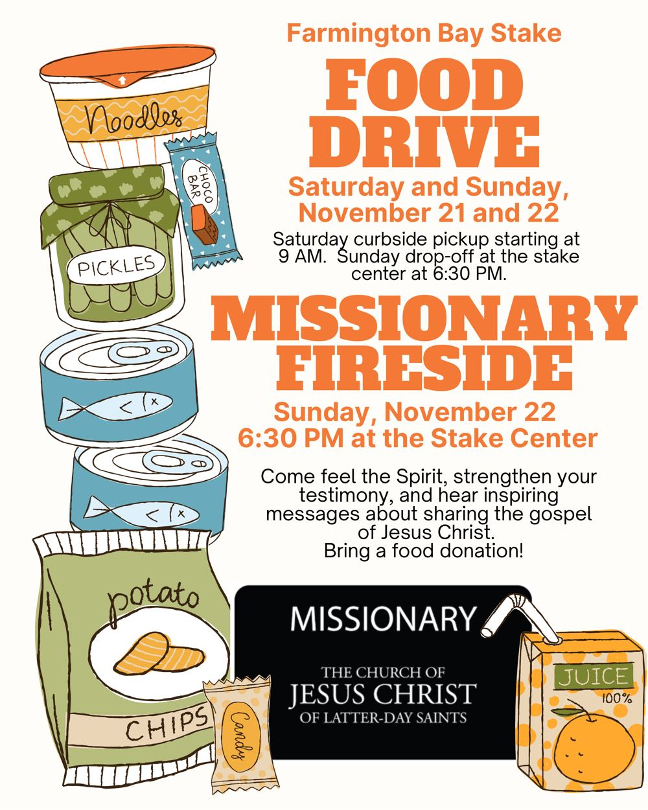
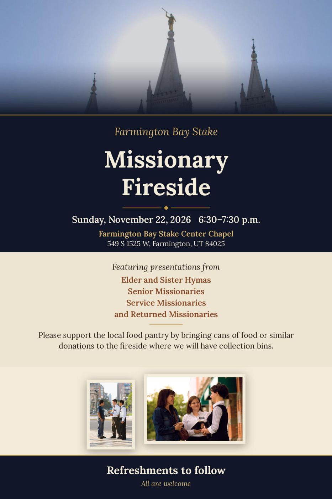

Faith Leader Suicide Prevention SummitNAMI Utah · for faith leaders
Thu, Oct 29 · 8:00 AM – 3:00 PM
Conference Center at Miller Campus, SLCC, Sandy (or virtual)
“the church did meet together oft” Moroni 6:5
Ward, Stake, and Area flyers, for your information. Times are Mountain Time. Past events hide automatically. Tap a flyer to see it full size.

Thu, Oct 29 · 8:00 AM – 3:00 PM
Conference Center at Miller Campus, SLCC, Sandy (or virtual)

Thu, Nov 5 · 6:00 – 8:00 PM
Farmington Bay Stake Center

Thu, Nov 12 · 6:30 PM
Cultural Hall, Stake Center (Eagle Shore building)
Sun, Nov 15 · 6:00 – 7:00 PM (doors 5:00)
Ogden Tabernacle, 2145 Washington Blvd, Ogden

Sun, Nov 15 · 7:00 PM
Farmington South Stake Center, 695 S 200 E, Farmington

Sat, Nov 21 curbside pickup from 9:00 AM · Sun, Nov 22 drop-off 6:30 PM
Curbside (Sat) · Stake Center (Sun)

Sun, Nov 22 · 6:30 – 7:30 PM
Stake Center Chapel, 549 S 1525 W, Farmington

Mondays school is in session · 4:30 – 5:45 PM · Christmas Program Mon, Dec 7
1282 W 1875 N, Farmington
No upcoming events right now. Check the Ward Calendar.